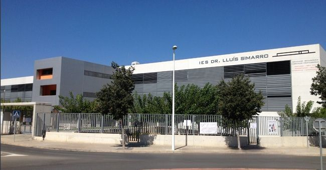

IES CFGSDesarrollo de Aplicaciones Multiplataforma
El ciclo que une lógica y oficio: programación en Java y Kotlin, bases de datos relacionales, acceso a datos, interfaces de usuario, procesos y entornos de desarrollo. La base de todo lo que hay en esta página.
IES Doctor Luis Simarro · Xàtiva (Valencia)